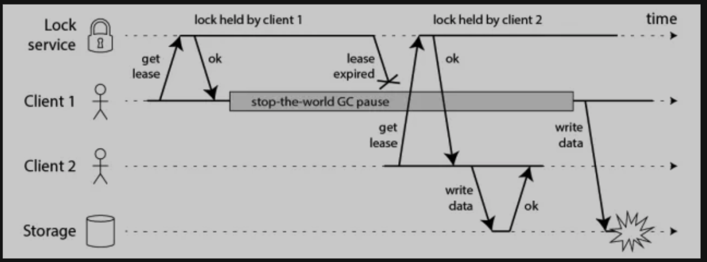
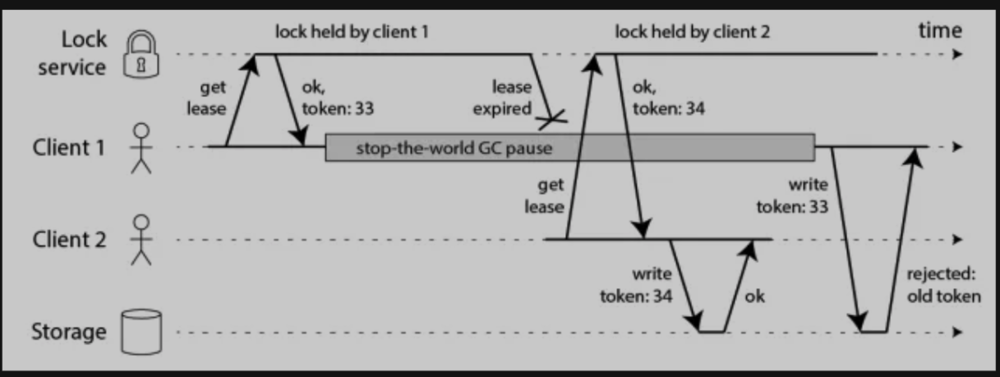
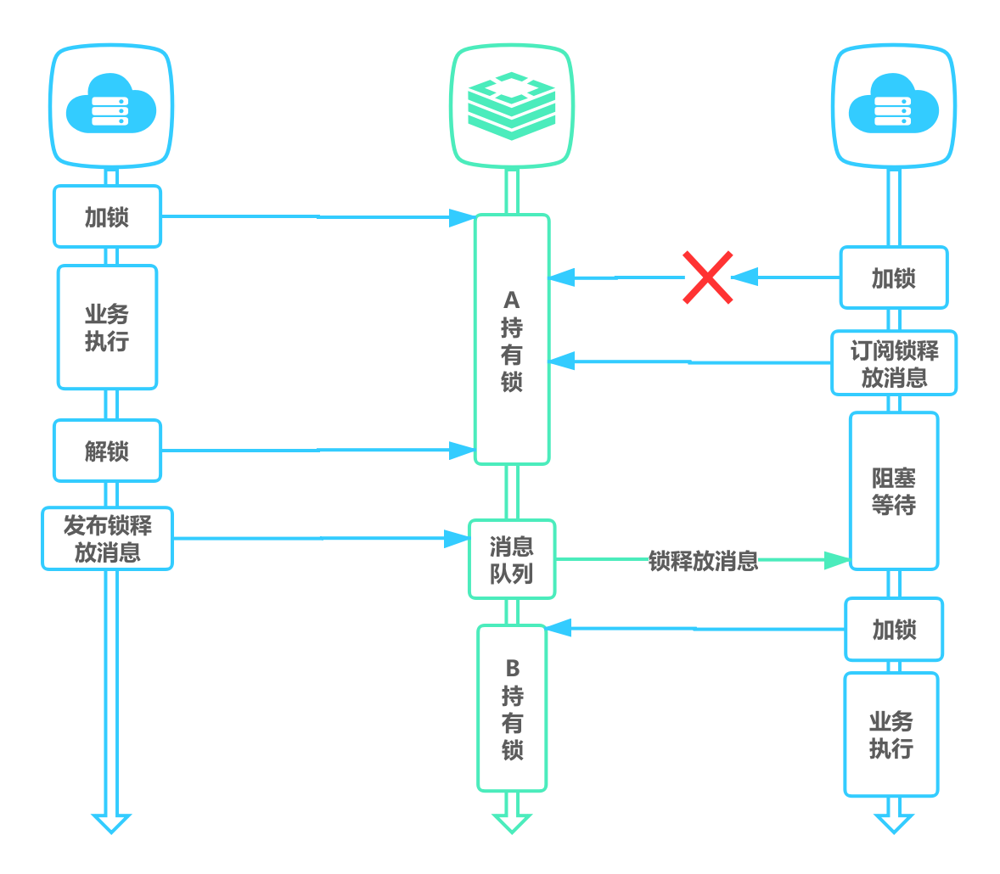
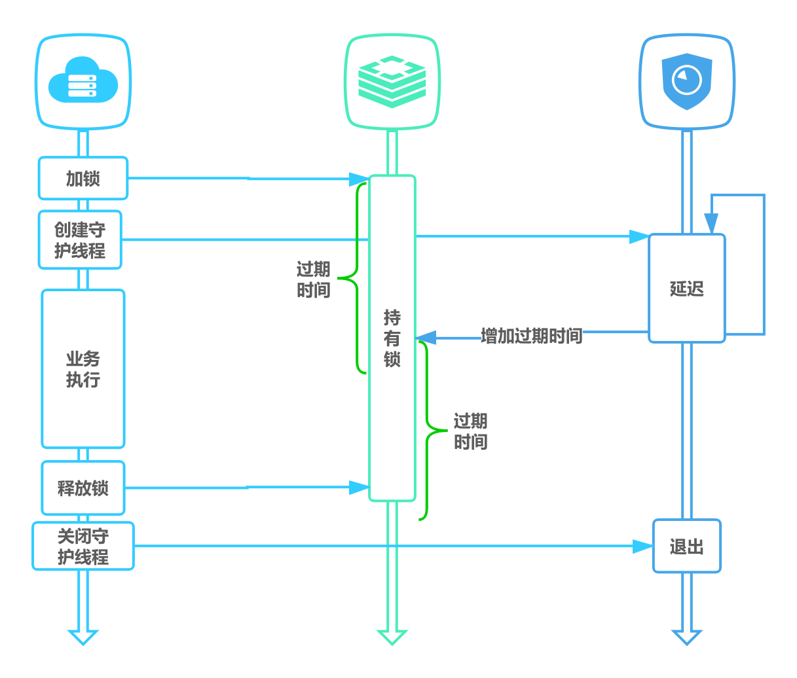
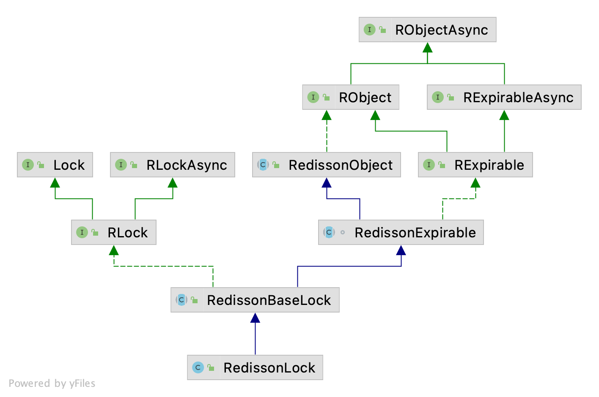
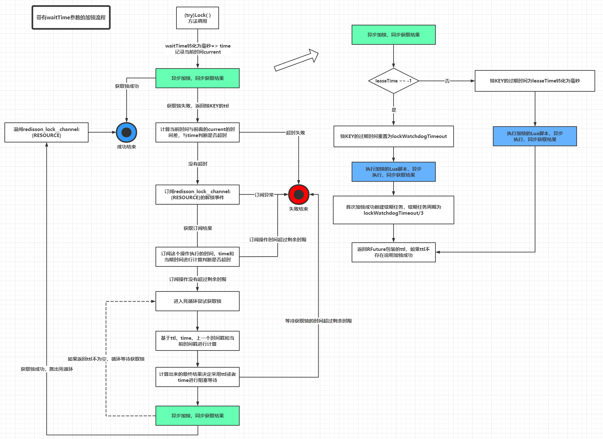
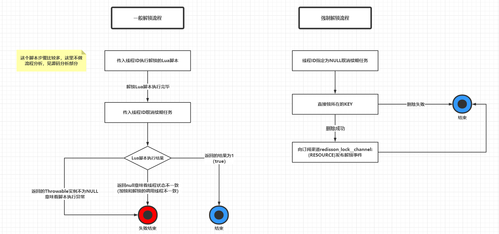

Redis 分布式锁
用锁来做什么？
在计算机科学中，锁是多线程环境中防止不同线程对同一资源进行操作的机制。锁的目的是确保在可能尝试执行同一工作的多个节点中，只有一个节点实际执行此操作（至少一次只有一个）。这项工作可能是将一些数据写入共享存储系统、执行一些计算、调用一些外部 API 等。概括而言，您可能需要在分布式应用程序中锁定的原因有两个：为了效率或为了正确性。为了区分这些情况，您可以询问如果锁定失败会发生什么：
- 效率 - Efficiency：获取锁可以避免你不必要地做同样的工作两次（例如一些昂贵的计算）。
- 正确性 - Correctness：使用锁可以防止并发进程相互干扰并破坏系统状态。如果锁失败，两个节点同时处理同一份数据，结果是文件损坏，数据丢失，永久性不一致、错误的执行结果或其他一些严重问题。
两者都是需要锁的有效情况，但您需要非常清楚您正在处理的是两者中的哪一个。
安全性和活跃性保证
我们将仅使用三个属性对我们的设计进行建模，从我们的角度来看，这是以有效方式使用分布式锁所需的最低保证。
- 安全特性：互斥。在任何给定时刻，只有一个客户端可以持有锁。
- 活跃性属性 A：无死锁。最终总是有可能获得锁，即使锁定资源的客户端崩溃或被分区。
- 活跃性属性 B：容错。只要大多数 Redis 节点都已启动，客户端就可以获取和释放锁。
分布式锁
分布式锁在许多环境中是非常有用的原语，在这些环境中，不同的进程必须以互斥的方式使用共享资源。操作系统或我们的软件一般会使用锁管理器来组织和顺序化去访问资源。分布式锁管理器 (distributed lock manager - DLM) 运行在集群中的每台机器上，并具有集群范围相同副本的锁数据库。通过这种方式，DLM 为分布在多台机器上的集群中的软件应用程序提供了一种同步对共享资源的访问的方法。
为什么基于故障转移的实现是不够的
为了了解我们想要改进的地方，让我们分析大多数基于 Redis 的分布式锁库的当前状态。
使用 Redis 锁定资源的最简单方法是在实例中创建 key。创建的 key 通常是有限的生存时间的，使用 Redis 过期功能，以便最终将其释放（我们列表中的属性 2）。
从表面上看，这很有效，但有一个问题：这是我们架构中的单点故障。如果 Redis master 宕机了怎么办？好吧，让我们添加一个 slave！如果 master 不可用，则使用它。不幸的是，这是不可行的。这样做我们无法实现互斥的安全属性，因为 Redis 复制是异步的。
这个模型有一个明显的竞争条件：
- 客户端 A 获取 master 的锁
- 写入 key 到 slave 之前，master 崩溃了
- slave 提升为 master
- 客户端 B 获取对 A 已经持有锁的同一资源的锁。违背安全性！
有时，在特殊情况下（例如在故障期间），多个客户端可以同时持有锁是完全没问题的。如果允许这种情况，您可以使用基于复制的解决方案。否则，我们建议实施本文档中描述的解决方案。
基于单实例的正确实现
在尝试克服上述单实例崩溃的限制之前，让我们检查一下如何在这个简单的情况下正确地做到这一点，因为在不经常出现竞争条件的应用程序中，这实际上是一个可行的解决方案，并且因为锁定单个实例是我们将用于此处描述的分布式算法的基础。
要获取锁，方法如下：
1 | SET resource_name my_random_value NX PX 30000 |
该命令仅在 key 不存在（NX 选项）时设置，过期时间为 30000 毫秒（PX 选项）。将 key 设置为值 “myrandomvalue”。该值在所有客户端和所有锁定请求中必须是唯一的。
随机值用于以安全的方式释放锁，该脚本告诉 Redis：仅当 key 存在并且存储在 key 中的值正是我期望的值时才删除它。这是通过以下 Lua 脚本完成的：
1 | if redis.call("get",KEYS[1]) == ARGV[1] then |
这对于避免删除由另一个客户端创建的锁很重要。例如，客户端可能获取锁，在某些操作中被阻塞超过锁有效时间（key 将到期的时间），然后删除其他客户端已经获取的锁。仅使用 DEL 是不安全的，因为客户端可能会删除另一个客户端的锁。使用上面的脚本，每个锁都用一个随机字符串“签名”，因此只有当它仍然是试图删除它的客户端设置的锁时，才会删除它。
这个随机字符串应该是什么？我假设它是来自 /dev/urandom 的 20 个字节，但是你可以找到更便捷的方法来使它对你的任务足够唯一。例如，一个安全的选择是用 /dev/urandom 为 RC4 做种子，并从中生成一个伪随机流。一个更简单的解决方案是使用 unix 时间微秒，将它与客户端 ID 连接，它不是那么安全，但可能适合大多数环境中的任务。
我们用作 key *存活时间（time to live - TTL）*的时间，称为“锁有效时间”。它既是自动释放时间，也是客户端在另一个客户端能够再次获取锁之前执行操作所需的时间，也就是该客户端对该 key 的租期，在技术上不违反互斥保证的情况下，互斥保证只限于从获取锁那一刻起的给定时间窗口。
所以现在我们有一个很好的方法来获取和释放锁。我们推理由单个始终可用的实例组成的非分布式系统是安全的。让我们将这个概念扩展到没有这种保证的分布式系统。
Redlock 算法
在算法的分布式版本中，我们假设我们有 N 个 Redis master 节点。这些节点是完全独立的，所以我们不使用复制或任何其他隐式协调系统。我们已经描述了如何在单个实例中安全地获取和释放锁。我们理所当然地认为算法会在单个实例中使用这种方法来获取和释放锁。
为了获取锁，客户端执行以下操作：
- 客户端以毫秒为单位获取当前时间。
- 它尝试顺序获取所有 N 个实例中的锁，并在所有实例中使用相同的 key 和随机值。在第 2 步中，当在每个实例中设置锁时，客户端使用一个比总锁自动释放时间更小的超时时间来获取锁。例如，如果自动释放时间为 10 秒，则超时时间可能在 ~ 5-50 毫秒范围内。这可以防止客户端长时间处于阻塞状态，试图与已关闭的 Redis 节点通信：如果实例不可用，我们应该尽快尝试与下一个实例通信。
- 客户端通过从当前时间中减去步骤 1 中获得的时间戳来计算获取锁所用的时间。当且仅当客户端能够在大多数实例（至少 3 个）中获取锁，并且获取锁所用的总时间小于锁有效时间，则认为该锁已获取。
- 如果获得了锁，则其有效时间被视为初始有效时间减去经过的时间，如步骤 3 中计算的那样。
- 如果客户端由于某种原因获取锁失败（或者它无法锁定 N/2+1 个实例或有效时间为负），它将尝试解锁所有实例（即使是它认为没有锁定的实例）能够锁定）。
算法是异步的吗？
该算法依赖于这样的假设：虽然进程之间没有同步时钟，但每个进程中的本地时间仍然以大致相同的速率流动，与锁的自动释放时间相比误差很小。这个假设与现实世界的计算机非常相似：每台计算机都有一个本地时钟，我们通常可以依靠不同的计算机来实现很小的时钟漂移。
此时我们需要更好地指定我们的互斥规则：只有持有锁的客户端会在锁的有效期内（如步骤 3 中获得的）内终止其工作，我们才能保证互斥，减去一些时间（只需几毫秒以补偿进程之间的时钟漂移）。
有关需要绑定*时钟漂移（clock drift）*的类似系统的更多信息，这篇论文是一个有趣的参考：Leases：一种用于分布式文件缓存一致性的高效容错机制。
如果在锁的有效期内未停止其工作，如下图：

客户端 1 在获得锁之后发生了很长时间的 GC pause，在此期间，它获得的锁租约过期了，而客户端 2 重新获得了该锁。当客户端 1 从 GC pause 中恢复过来的时候，它不知道自己持有的锁已经过期了，它依然向共享资源发起了写数据请求，而这时锁实际上被客户端 2 持有，因此两个客户端的写请求就有可能冲突（锁的互斥作用失效了）。
那怎么解决这个问题呢？Martin 给出了一种方法，称为 fencing token。fencing token 是一个单调递增的数字，当客户端成功获取锁的时候它随同锁一起返回给客户端。而客户端访问共享资源的时候带着这个 fencing token，这样提供共享资源的服务就能根据它进行检查，拒绝掉延迟到来的访问请求（避免了冲突）。如下图：

在上图中，客户端 1 先获取到的锁，因此有一个较小的 fencing token，等于 33，而客户端 2 后获取到的锁，有一个较大的 fencing token，等于 34。客户端 1 从 GC pause 中恢复过来之后，依然是向存储服务发送访问请求，但是带了 fencing token = 33。存储服务发现它之前已经处理过 34 的请求，所以会拒绝掉这次 33 的请求。这样就避免了冲突。
但这种处理又将锁的排他安全性转移给了资源服务，如果资源服务本身就可以保证排他访问，为什么需要分布式锁？
失败时重试
当客户端无法获取锁时，它应该在随机延迟后重试，以尝试使多个客户端同时尝试获取同一资源的锁（这可能会导致没有人获胜的脑裂情况）。此外，客户端尝试在大多数 Redis 实例中获取锁的速度越快，出现脑裂情况的窗口就越小（以及需要重试），所以理想情况下，客户端应该尝试使用多路复用将 SET 命令同时发送到 N 个实例。
值得强调的是，对于未能获取大部分锁的客户端，尽快释放（部分）获取的锁是多么重要，这样就不需要等待 key 到期才能再次获取锁（但是，如果发生网络分区并且客户端不再能够与 Redis 实例通信，则在等待 key 到期时需要容忍可用性损失）。
释放锁
释放锁很简单，只涉及在所有实例中释放锁，无论客户端是否相信它能够成功锁定给定的实例。
如果一个分布式锁占用资源时间过长，导致其他客户端无法在有效时间内获取同一资源，则可以使用 Redis 的发布订阅功能，去主动告知其他需要资源的客户端。

安全性参数
算法安全吗？我们可以尝试了解在不同场景中会发生什么。
首先让我们假设客户端能够在大多数情况下获取锁。所有实例都将包含一个具有相同生存时间的 key。但是，key 是在不同的时间设置的，因此 key 也会在不同的时间到期。但是如果第一个 key 最差在时间 T1（我们在联系第一台服务器之前采样的时间）设置，而最后一个 key 最差在时间 T2（我们从最后一个服务器获得回复的时间）设置，我们确信集合中第一个要过期的 key 至少会存在 MIN_VALIDITY=TTL-(T2-T1)-CLOCK_DRIFT。所有其他 key 将在稍后到期，因此我们确信至少这次 key 将同时设置。
在设置了大多数 key 的时间内，另一个客户端将无法获取锁，因为如果 N/2+1 个 key 已经存在，则 N/2+1 次 SET NX 操作将无法成功。因此，如果获取了锁，则不可能同时重新获取它（违反互斥属性）。
但是，我们还希望确保多个客户端同时尝试获取锁不能同时成功。
如果客户端使用接近或大于锁定最大有效时间（我们用于 SET 的 TTL）的时间锁定大多数实例，它将认为锁定无效并解锁实例，所以我们只需要考虑客户端能够在小于有效时间的时间内锁定大多数实例的情况。在这种情况下，对于上面已经陈述的参数，对于 MIN_VALIDITY，没有客户端应该能够重新获取锁。因此，只有当锁定多数的时间大于 TTL 时间时，多个客户端才能同时锁定 N/2+1 个实例（“时间”为第 2 步的结束），从而使锁定无效。
活跃性参数
系统活跃性基于三个主要特征：
- 锁的自动释放（因为 key 过期）：最终 key 可以再次被锁定。
- 事实上，客户端通常会在没有获得锁时合作移除锁，或者当获得锁并且工作终止时合作移除锁，这使得我们可能不必等待 key 到期来重新获取锁锁。
- 事实上，当客户端需要重试锁时，它等待的时间比获取大多数锁所需的时间要长，以便在资源争用期间从概率上使脑裂情况不太可能发生。
然而，我们在网络分区上容忍了与 TTL 时间相等的可用性损失，所以如果有连续的分区，我们需要无限期地容忍这个损失。每次客户端获取锁并在能够删除锁之前被分区时都会发生这种情况。
基本上，如果有无限连续的网络分区，系统可能会在无限长的时间内变得不可用。
性能、崩溃恢复和 fsync
许多使用 Redis 作为锁服务器的用户在获取和释放锁的延迟方面以及每秒可能执行的获取/释放操作数量方面都需要高性能。为了满足这个需求，与 N 个 Redis 服务器对话以减少延迟的策略肯定是多路复用（即把 socket 置于非阻塞模式，发送所有命令，然后读取所有命令，假设客户端和每个实例之间的 RTT 相似）。
然而，如果我们想要针对崩溃恢复系统模型，还有另一个关于持久性的考虑。
假设一共有 5 个 Redis 节点：A, B, C, D, E。设想发生了如下的事件序列：
- 客户端 1 成功锁住了 A, B, C，获取锁成功（但 D 和 E 没有锁住）。
- 节点 C 崩溃重启了，但客户端 1 在 C 上加的锁没有持久化下来，丢失了。
- 节点 C 重启后，客户端 2 锁住了 C, D, E，获取锁成功。
这样，客户端 1 和客户端 2 同时获得了锁（针对同一资源），违反了锁的排他性的安全属性。
如果我们启用 AOF 持久化，情况会有所改善。例如，我们可以通过发送 SHUTDOWN 并重新启动它来升级服务器。因为 Redis 过期是在语义上实现的，所以当服务器关闭时，实际上时间仍然在流逝，所以我们所有的要求都很好。然而，一切都很好，只要它是干净的关机。停电了怎么办？如果 Redis 配置为默认情况下每秒在磁盘上进行 fsync，则可能在重新启动后丢失我们的 key 。理论上，如果我们想在面对任何类型的实例重启时保证锁的安全，我们需要在持久化设置中启用 fsync=always。这样会破坏性能，将会和传统上用于以安全方式实现分布式锁的 CP 系统相同级别。
然而，事情总比乍一看的样子要好。基本上，只要实例在崩溃后重新启动，它不再参与任何当前活动的锁，就可以保留算法安全性。这样当实例重新启动时，当前活动的一组锁都是通过锁定实例而不是重新加入系统的实例获得的。
为了保证这一点，我们只需要确保一个实例，在崩溃后，至少在比我们使用的最大 TTL 多一点的时间内不可用，即实例崩溃时存在的所有锁的 key 所需的时间，即实例崩溃，失效并自动释放时存在的所有锁的 key 所需的时间。
使用延迟重启，即使没有任何可用的 Redis 持久性，基本上也可以实现安全性，但是请注意，这可能会转化为可用性损失。例如，如果大多数实例崩溃，系统将在 TTL 中全局不可用（这里全局意味着在此期间根本没有资源可锁定）。
使算法更可靠：扩展锁
如果客户端执行的工作由小步骤组成，则可以默认使用较小的锁有效时间，并扩展实现锁扩展机制的算法。基本上客户端，如果在计算的中间，当锁有效性接近低值时，如果 key 存在并且它的值仍然是获取锁时客户端分配的随机值，可以通过向所有扩展 key 的实例的 Lua 脚本发送一个 Lua 脚本来扩展锁。 如果客户端能够将锁扩展到大多数实例，并且在有效时间内（基本上使用的算法与获取锁时使用的算法非常相似），客户端应该只考虑重新获取锁。 然而，这在技术上不会改变算法，因此应该限制锁重新获取尝试的最大次数，否则会违反活跃性属性之一。
在单实例时使用监视器也可以达成该目的，在多实例下实现会更加复杂。
比如使用守护线程或其他形式去观察并自动续约，例如 Redisson 的 watchdog。

实现
Redisson 作为 Java 版本的 Redis 客户端，底层使用 Netty 这种高性能无阻塞的 IO 框架，为我们提供了很多 Redis 数据结构的 Java 版本，还有很多分布式锁、分布式对象，分布式服务等，以及提供了异步、响应式的请求方式。

它也支持 Redis 的多种部署方式：复制、集群、哨兵、主从、单例模式。
单实例下的有效锁
Redisson 中基于单实例的正确实现锁有很多，他们都实现了 RLock 接口，该接口继承与 Java 的 Lock 接口，实现该接口的类也都实现了可重入性。最基本的实现有：
RedissonLock：Java Lock 的分布式实现，实现可重入锁。如果客户端断开连接，锁定将自动解除。实现非公平锁定，因此不保证获取顺序。RedissonFairLock：和上述锁相同，但实现了公平性，以保证线程的获取顺序。
RedissonLock
接下来我们就来看下 RedissonLock 是如何实现锁的，他的 UML 类继承图如下：

这里需要有几点认知：
RedissonLock实现了java.util.concurrent.locks.Lock接口中除了newCondition()方法外的所有方法，也就是可以基本无缝适配Lock接口，对于习惯Lock接口的API的使用者来说是一个福音RedissonLock基本所有同步API都依赖于异步API的实现，也就是RLock的实现依赖于RLockAsync的实现，底层依赖的是Netty的io.netty.util.concurrent.Promise，具体见RedissonPromise，如果用过JUC中的Future的开发者应该比较熟悉Future#get()，这里的做法类似- 右边的几个父类的简单功能描述如下：
RObjectAsync：所有Redisson对象的基础接口，提供一些内存测量、对象拷贝、移动等的异步方法RObject：RObjectAsync的同步版本RExpirableAsync：提供对象TTL相关的异步方法RExpirable：RExpirableAsync的同步版本RedissonObject：直接实现类RObject接口中的方法RedissonExpirable：主要是实现了RExpirable接口中的方法
下面我们就来看下如何使用该 Lock，一般我们使用 Java 的 Lock 典型用法为：
1 | Lock lock = ...; |
在 RedissonLock 中我们同样可以这样使用，但是就像我们之前陈述的，我们需要为锁定义有效时间（TTL），让我们看下代码中是如何实现的：
1 | // 该类实现了 Lock 的 tryLock 接口， |
加锁
1 |
|
整个流程如下图：

这里面比较重要的是获取锁 tryAcquire 的操作，如下。
获取锁
在这里，它有两种处理方式，一种是带有过期时间的锁，一种是不带过期时间的锁。
1 | private <T> RFuture<Long> tryAcquireAsync(long waitTime, long leaseTime, TimeUnit unit, long threadId) { |
接着往下看，tryLockInnerAsync 方法是真正执行获取锁的逻辑，它是一段 LUA 脚本代码。
1 | <T> RFuture<T> tryLockInnerAsync(long waitTime, long leaseTime, TimeUnit unit, long threadId, RedisStrictCommand<T> command) { |
LUA 中的数组从 1 开始计数，KEYS 代表键数组，ARGV 代表参数数组。同时，Redis 保证以一种原子性的方式来执行脚本：当 LUA 脚本在执行的时候，不会有其他脚本和命令同时执行，这种语义类似于 MULTI/EXEC。从别的客户端的视角来看，一个 LUA 脚本要么不可见，要么已经执行完，这也因为 Redis 是单线程的原因。
解锁
1 | protected RFuture<Boolean> unlockInnerAsync(long threadId) { |
解锁主要也是通过 LUA 脚本执行的，流程如下：
